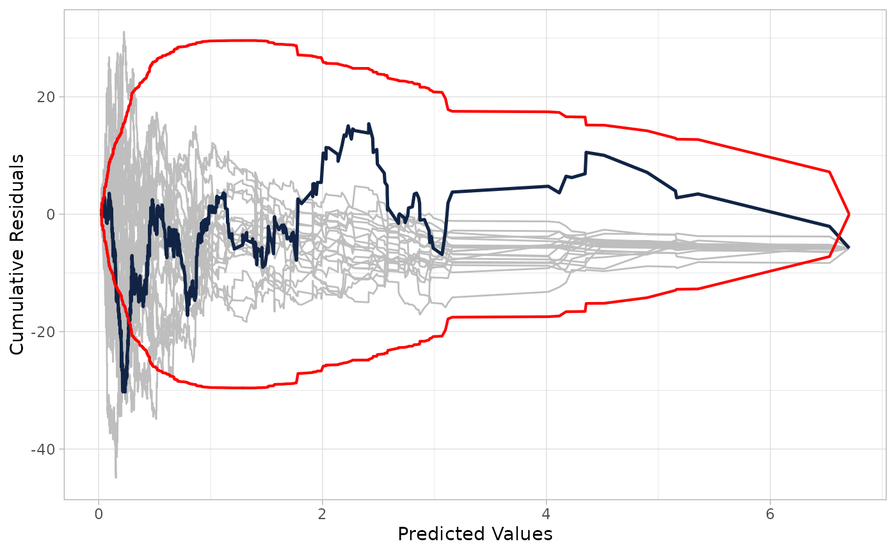
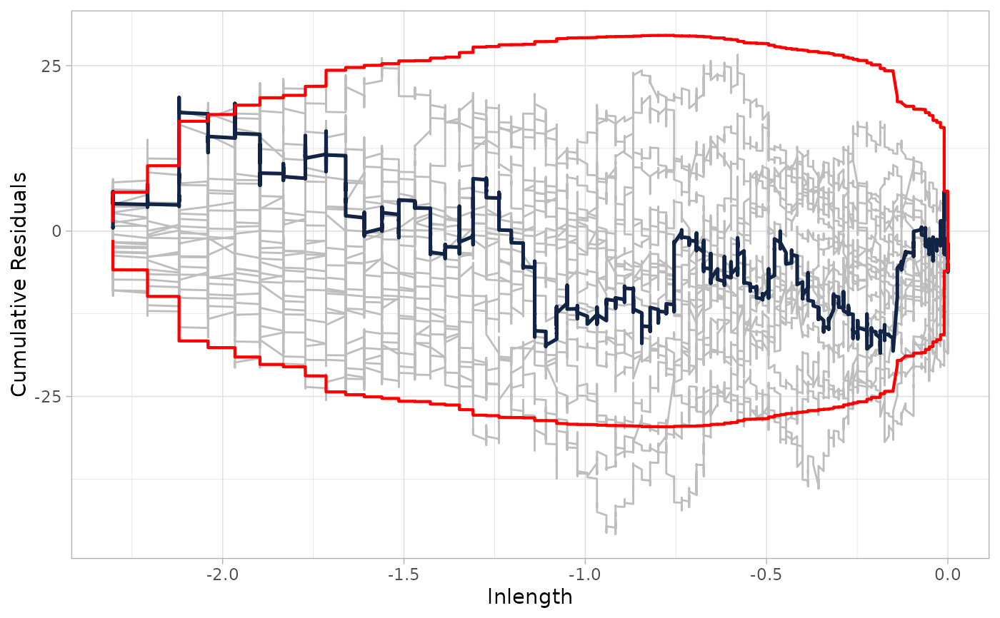

Cumulative Residuals (CURE) Plot for Count Models
cureplot.RdThis function generates a Cumulative Residuals (CURE) plot for count models, including those with random parameters, estimated using the flexCountReg package.
Arguments
- model
A model object estimated using this R package.
- data
Optional dataframe. If not provided, the data used to fit the model will be used.
- indvar
Optional independent variable name (character string). This is the continuous independent variable to plot the cumulative residuals against. If not provided, the plot will be against the predicted values.
- method
Optional parameter to pass to the predict function. This is only used for random parameters models (e.g., "Simulated" or "Individual"). For further details, see
predict.flexCountReg.- n_resamples
Number of resamples for potential resampling in the CURE plot confidence bands. Default is 0 (no bands).
- ...
Additional arguments passed to
cure_plot.
Examples
# \donttest{
## Example using a Negative Binomial model
data("washington_roads")
washington_roads$AADTover10k <- ifelse(washington_roads$AADT>10000,1,0)
nb_model <- countreg(Total_crashes ~ lnaadt + lnlength + speed50 +
ShouldWidth04 + AADTover10k,
data = washington_roads, family = 'nb2',
method = 'NM', max.iters = 500)
# 1. Plot against fitted values (default) with confidence bands
cureplot(nb_model, n_resamples = 20)
#> Covariate: indvar_values
#> CURE data frame was provided. Its first column, Predicted Values, will be used.

# 2. Plot against a specific covariate (e.g., lnlength)
cureplot(nb_model, indvar = "lnlength", n_resamples = 20)
#> Covariate: indvar_values
#> CURE data frame was provided. Its first column, lnlength, will be used.

# }